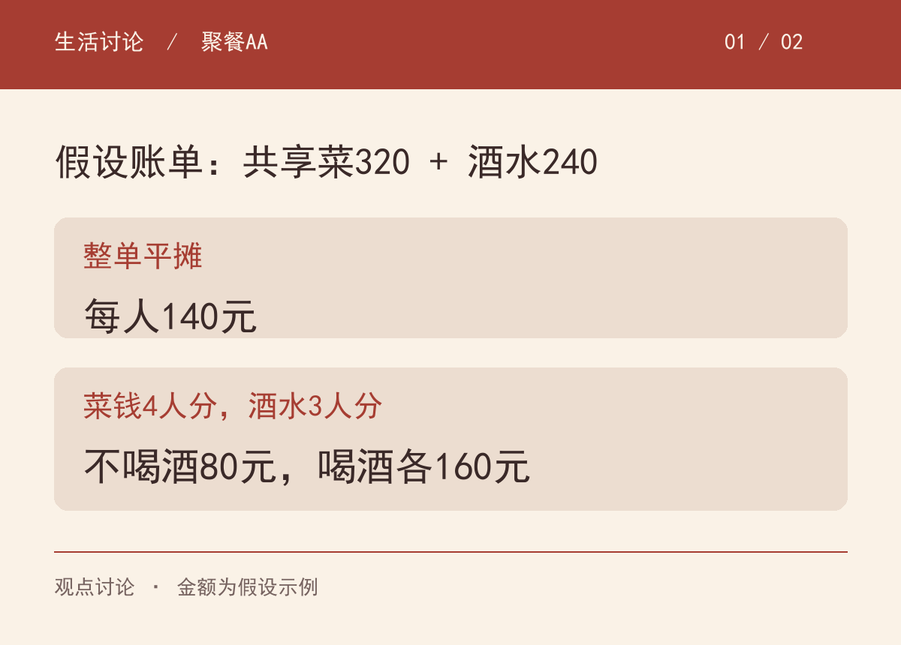
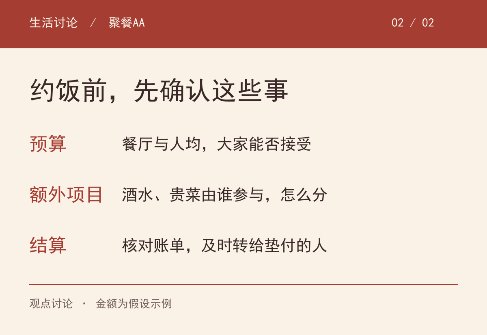

四个朋友聚餐，结账560元，直接除以四，每人140元。看起来很省事。但如果其中240元是三个人喝的酒，第四个人没有喝，这个“人人一样”的结果，还能让每个人都舒服吗？
这是一张假设账单，不是亲身经历。共享菜320元，四个人一起吃；酒水240元，三个人喝。如果菜钱四人均分、酒钱三人均分，不喝酒的人付80元，其余三人各付160元，总额仍是560元。

两种算法都很简单。真正有分歧的是，我们对一次聚餐的期待不同。
赞成平摊的人，并不一定想占谁的便宜。一起吃饭时，共享菜很难分清每个人吃了多少：有人多吃肉，有人喜欢蔬菜，有人先到、有人晚来。如果每一筷子都要记账，一顿饭确实容易吃得累。
熟人之间还可能有长期来往。今天你点的菜多一点，下次我约的餐厅贵一点，大家愿意宽松处理，也是一种相处方式。一次饭钱的细小差额，未必值得成为每次聚餐的主题。
这种做法的前提，是参与的人真的接受。大家都觉得省事，平摊就可以是合适的选择。不能因为有人不愿意这么分，就反过来否定他是不是朋友。
我的倾向是，明显可以分开的额外项目，先问参与者怎么处理。比如一笔单独点的酒水，和共享菜里多吃一口、少吃一口，核算起来并不一样。
不喝酒的人提出单分酒钱，无须先解释自己的收入，也无须证明这笔钱已经影响生活。同样，喝酒的人可以提出一起平摊，但应给对方表达不同意见的空间。
如果关系里的“好说话”，总要靠同一个人不出声来维持，那么省下的沟通，可能会留到下一次约饭时变成犹豫。
这只是我对相处方式的判断，不能凭一张账单推断谁的人品。有人习惯把整桌当成一次共同活动，有人习惯按参与程度分项目。差异值得提前说清楚。
有时，等到账单出现再讨论AA，已经晚了一步。餐厅是谁选的？人均大约多少？有人要点明显更贵的东西时，其他人有没有机会说不？这些问题，比最后用计算器按哪几个键更早发生。
组局的人可以在约饭时说一句：“这家大约人均多少，大家觉得合适吗？”点酒前再确认：“酒水我们几个喝的人单分，可以吗？”
不愿喝酒的人也可以直接表达：“我今天不喝酒，菜钱一起分，酒水你们分，方便吗？”理由说到这里就够了，不必拿出一整套生活账本为自己辩护。

如果朋友愿意请这顿酒，也可以接受并道谢。把规则说清楚，是为了让选择更自在，并不要求每次都拒绝别人的好意。
假如饭前已经说好整单平摊，自己也明确答应，到了结账时，当然应把这个约定纳入考虑。对某项消费不满意，可以为下次换一种分法，而不是假装之前什么也没有说过。
不过，临时加了一瓶明显超出原预算的酒，或多点了一道昂贵的菜，也应再确认。原来同意的消费范围，不宜被不断扩大。
还有一种容易被忽略的情况：一位朋友先垫了钱，大家却迟迟没有转账。无论采用哪一种分法，都可以在账单出来后核对、及时结清。别让负责付款的人同时承担催款的为难。
至于餐厅能不能分开出单，要看现场是否方便。可以由一人统一付款，再在朋友之间核算，不必把我们的所有分账要求都留给服务人员处理。
共享菜平摊、单独项目另算，是我对这张假设账单更倾向的安排。经常来往且彼此接受的朋友，选择整单平摊、轮流请客，也没有必要被别人纠正。
我更希望保留的是，每个人都能说出自己的想法，并且不会因此被轻易扣上“小气”或“算计”的帽子。一次照顾对方，与长期默认对方承担，也应该分开看。
如果这顿饭让大家都愿意再约下一次，那么分账方式至少没有把某个人的感受排除在外。
回到开头那张560元的账单：你会选择每人140元，还是不喝酒的80元、喝酒的各160元？如果是经常互相请客的老朋友，你的答案会变吗？
本文为观点讨论，金额与饭局均为假设示例，不对应真实当事人。讨论背景参考：TODAY，Thomas P. Farley，2023-04-24，I don’t drink. Should I still split the bill evenly? Etiquette expert weighs in。图卡为原创绘制，内容经AI辅助整理与人工核对。